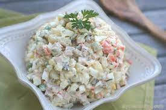

Return to Homepage
Authentic Russian Salad Olyvie

This is a recipe my mom and grandmother use every time there's a
family gathering or a special occasion. To make this a vegetarian dish
just leave out the ham. Potatoes, carrots, and eggs do not have to be
chilled completely after boiling. Dill can be substituted for parsley if
desired.
Ingredients
- 6 potatoes, peeled
- 1 carrot, or more to taste
- 4 eggs
- 6 large pickles, cut into cubes
- 1 (15 ounce) can peas, drained
- ½ cup cubed fully cooked ham, or to taste
- 1 tablespoon chopped fresh parsley, or to taste
(optional)
- ½ cup mayonnaise, or to taste
Steps
- Bring a large pot of water to a boil; add potatoes and carrot.
Return mixture to a boil and add eggs; cook until potatoes are
tender, 20 to 30 minutes. Drain and slightly cool mixture. Chop
potatoes and carrot; peel and chop eggs.
- Mix potatoes, carrot, eggs, pickles, peas, ham, and parsley
together in a large bowl; stir in mayonnaise until salad is evenly
coated.
Return to Homepage